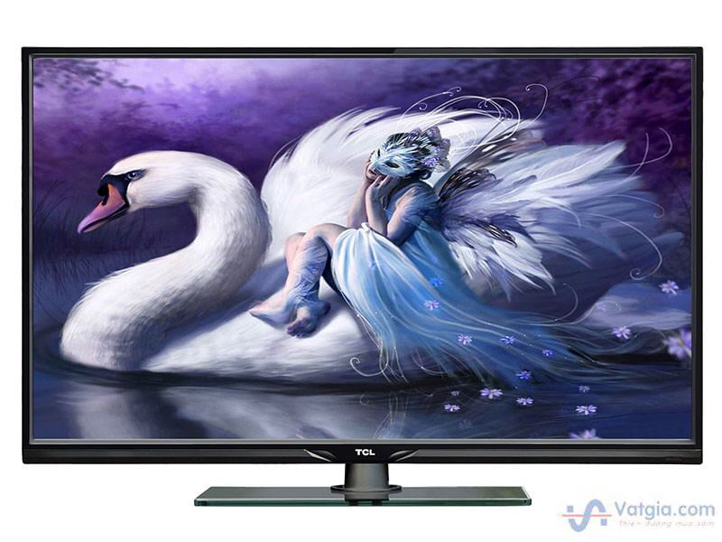
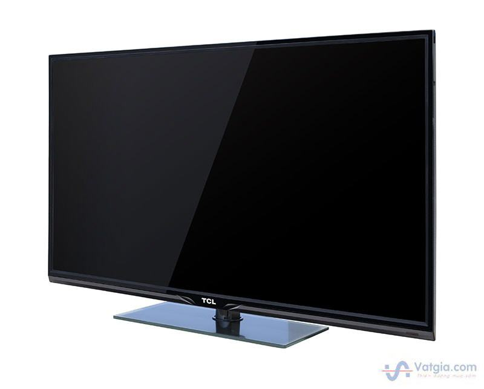
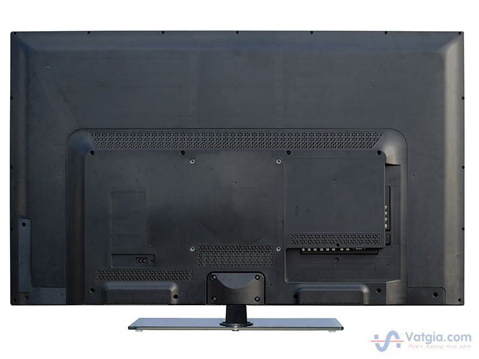
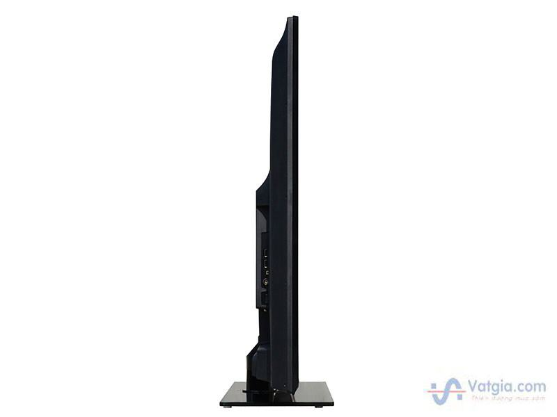
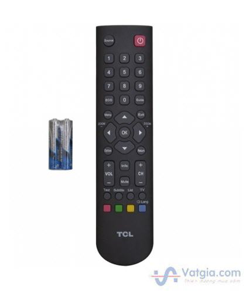

Thông tin chi tiết Tivi TCL L48B2600D
Tình trạng : Mới
Bảo hành : 24 Tháng
Nguồn gốc : Chính hãng
Hãng sản xuất : TCL
Độ lớn màn hình : 48inch
Độ phân giải màn hình : 1920 x 1080pixel
Tần số quét : 100Hz
Tỉ lệ hình :• -
• 16:9
Cổng kết nối:
• HDMI
• Component
• Composite
• USB
• S-video
• VGA
Tính năng : • Full HD
Tính năng khác :
-Tích hợp truyền hình số mặt đất (DVB-T2)
-Hỗ trợ định dạng file phụ đề SRT.
-Hỗ trợ xem hình ảnh dạng JPEG trực tiếp qua cổng USB.
-Hỗ trợ nghe nhạc dạng WMA, MP3 trực tiếp qua cổng USB.
-Cổng kết nối đa dạng: AV-IN X 1, AV-OUT X 1, 1 X DVD, 1 X VGA, 1 X USB.
Nguồn điện : 110V ~ 240V
Công suất loa (W) : 5
Kích thước có chân đế (mm) : 1095 x 705 x 230
Kích thước không có chân đế (mm) : 1095 x 655 x 82
Trọng lượng có chân đế (kg) : 10
Trọng lượng không chân đế (kg) : 9
Xuất xứ : Việt Nam





Trở Lại